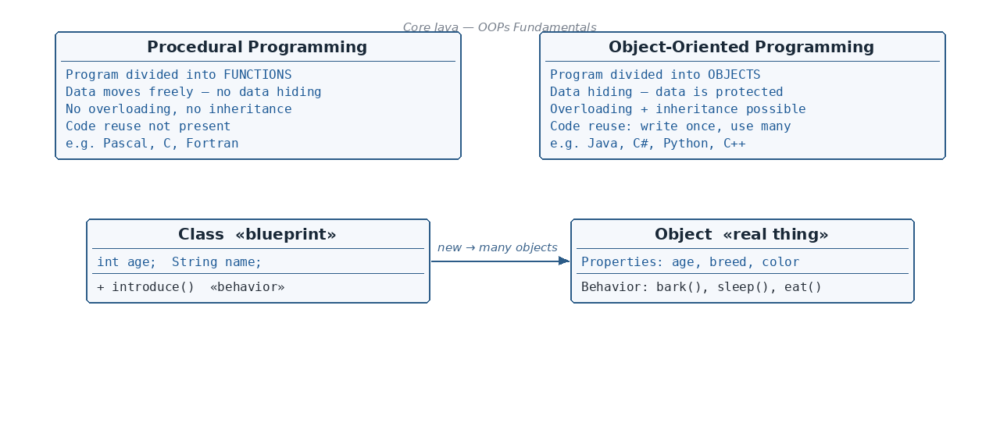

Procedural Programming (the old style)
☕ 4 min read · 🎬 Video walkthrough · 📊 UML diagram · 💻 Runnable code
⚡ In a nutshell — What procedural programming is, and where it falls short · What Object-Oriented Programming (OOP) is, and why Java uses it · A side-by-side comparison of procedural programming vs OOP · What an object is (properties + behavior), with a real-life example
Before Java, most programs were written in a style called procedural programming. Java uses a newer style called Object-Oriented Programming (OOPs). Let's understand both.

In procedural programming, a program is divided into small parts called functions. Think of it like a long recipe: step 1, step 2, step 3... where every step can touch every ingredient.
The problems with this style:
In OOP, a program is divided into objects. An object keeps its data and the functions that work on that data together in one box. Think of a team of workers: each worker (object) has their own tools (data) and their own skills (functions), and nobody else touches their tools directly.
Remember: Procedural programming thinks in steps (functions). OOP thinks in things (objects). Java is an object-oriented language.
An object is any "thing" in your program. Every object has exactly 2 things:
A Dog is an object because it has:
You can apply this test to anything: a car (properties: color, speed; behaviors: start, brake), a phone (properties: brand, battery; behaviors: call, ring). If it has properties and behaviors, it can be modeled as an object.
A class is the blueprint of the object.
A class is like a house blueprint; objects are the actual houses built from it. The blueprint itself is not a house — it only describes what every house of that design will look like. In the same way, a class describes the properties and behaviors, and objects are the real things created from that description.
Key points:
class.class Student {
// Properties / state -> called "data variables"
int age;
String name;
// Behavior / function -> called a "data method"
public void updateName() {
name = "Updated Name";
}
}
Note: A data method works on the data variables (the properties). Here
updateName()changes thenamevariable.
We create an object using the new keyword:
Student engStudent = new Student();
Read it like this: "Make a new Student from the Student blueprint, and call it engStudent."
class Student {
int age; // property
String name; // property
public void introduce() { // behavior
System.out.println("Hi, I am " + name + " and I am " + age + " years old.");
}
}
public class Main {
public static void main(String[] args) {
// One class, multiple objects:
Student engStudent = new Student(); // object 1
engStudent.age = 20;
engStudent.name = "Ravi";
Student medStudent = new Student(); // object 2
medStudent.age = 22;
medStudent.name = "Priya";
engStudent.introduce();
medStudent.introduce();
}
}
Output:
Hi, I am Ravi and I am 20 years old.
Hi, I am Priya and I am 22 years old.
Notice: both objects came from the same class, but each object keeps its own copy of the properties (age, name).
class keyword; create an object with the new keyword: Student s = new Student();👏 Found this useful? Give it a few claps so more developers discover it, and follow for the whole series — every article ships with a UML diagram, runnable code, a narrated video, and a companion PDF. Happy building! 🚀